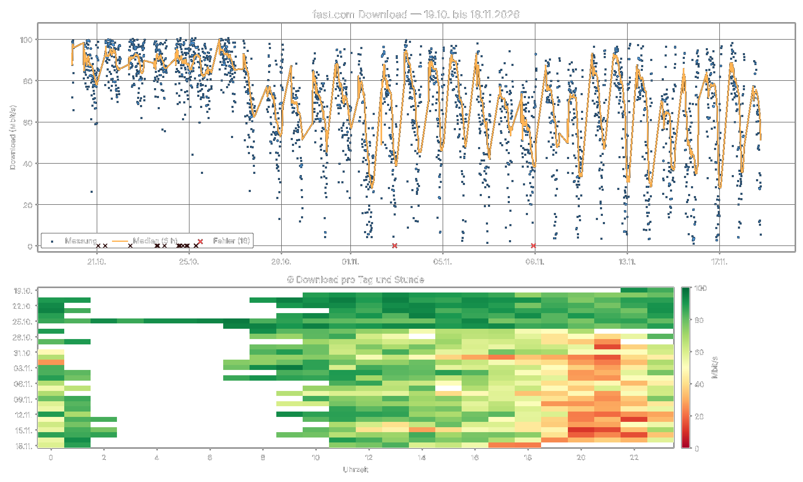

German Internet in a Nutshell
everybody should be able to know what they are paying for.
sometimes, this is not as easy as doing a quick bandwidth test, often you need more data.
we, as netizens, can provide that, to give each other a massive advantage, actually knowing what advertisements hold their word.
there is a fantastic tool by breitbandmessung.de, if you want a softer Version, we got u.
sometimes a simple Tool with a database is all you need.
